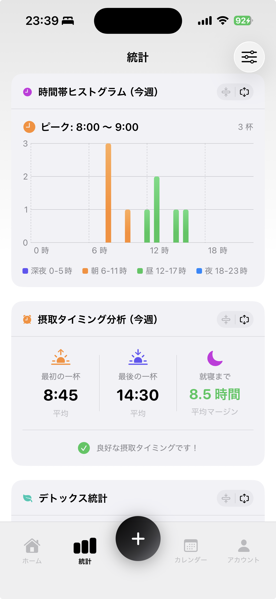
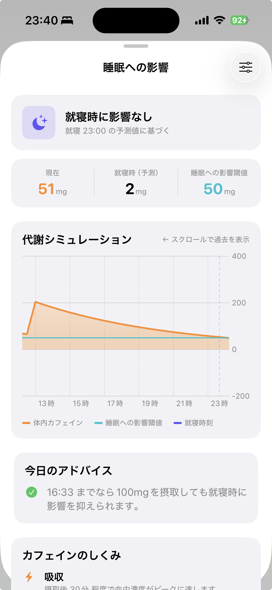
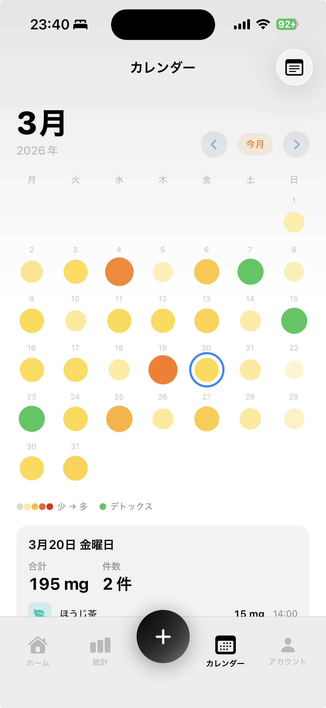
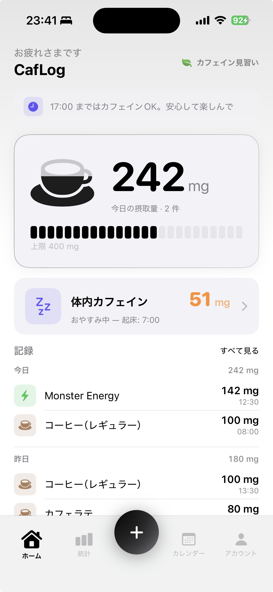
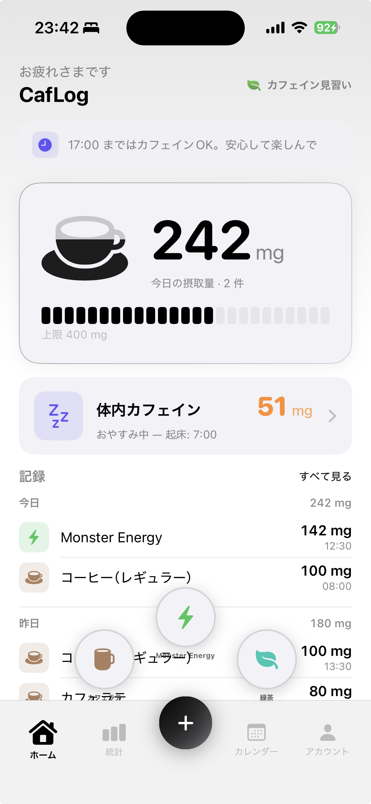

10秒で記録
お気に入りドリンクをワンタップ。プリセットは18種類、カスタム登録も可能。
カフェインとの付き合いを、見える化。
薬物動態モデルに基づいて、いま体内にあるカフェイン量をリアルタイム計算。
就寝時刻への影響まで考えて、カフェインとの距離をちょうどよく保てます。
お気に入りドリンクをワンタップ。プリセットは18種類、カスタム登録も可能。
薬物動態（吸収・代謝）モデルで、いま体内に残っているカフェイン量を常に可視化。
就寝時刻を考慮して、いま摂っていいかの判断材料を提示。
日次・週次・カテゴリ別の内訳を、見たい角度で切り替えてチェック。
継続や節度をゲーミフィケーションで後押し。
ロックを外さなくても、いまのカフェイン状況が一目でわかる。





今すぐダウンロードしてご利用いただけます。